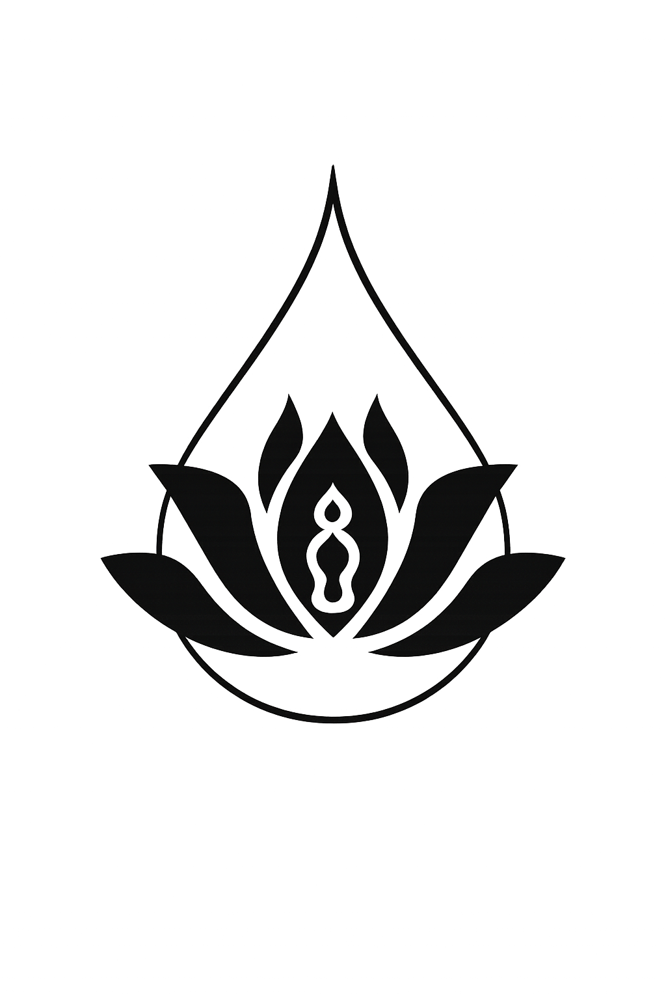
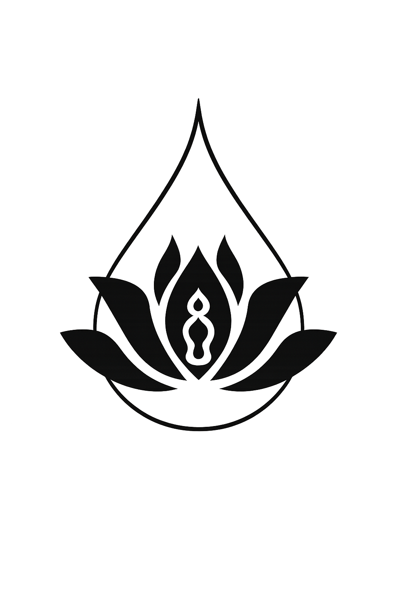

根へ・静寂へ・同じ源へ
仏教は国を越え、時代を越え、
異なる文化をむすぶ静かな橋であり続けてきました。
仏教は国を越え、時代を越え、
異なる文化をむすぶ静かな橋であり続けてきました。
日本と中国、二つの大地に根づいた仏教の歴史をもう一度見つめ直します。
経典・戒律・修行の伝承だけでなく、寺院建築や芸術、生活文化に刻まれた「仏教の足跡」を、
共同研究・現地交流・記録映像などを通じて次世代へつないでいきます。

法要や坐禅、読経の場で共有される静けさは、言語をこえた対話のかたちです。
寺院でともに祈り、沈黙の時間を分かち合うことで、お互いの文化や歴史への理解が
ゆっくりと深まっていきます。
日本と中国、歩んできた歴史はちがっても、その根には同じ「仏教」という源があります。
私たちは、日中両国の寺院・学術機関・市民団体と連携しながら、互いのちがいを尊重しつつ、
共通の源から学び合う交流の場をひらいています。
仏教交流寺院は、静けさと調和が息づく場所です。
古来より伝わる修行の空気の中で、
心を整え、呼吸をゆるめ、日常からそっと離れる時間を過ごします。
 



仏教文化・歴史研究・国際交流をテーマとした全国規模のフォーラム。
天台宗の総本山で行われる禅修・戒律研修プログラム。
観音信仰・巡礼行事・水陸法会などを含む年間最大規模の祭典。
五台山で開催される大規模な仏教祈祷・講経・巡礼行事。
一度の訪問や行事だけではなく、
寺院と寺院、人と人が、時間をかけて信頼を育てていくことを大切にしています。
一つひとつの出会いが、長い歴史の続きをともに書いていく頁になります。
心が静まるとき、世界の輪郭もやさしく変わります。
何かを足すのではなく、手放すことから始まります。
歩みをとめて、ただ今ここに在る自分を感じてみましょう。
小さな「ありがとう」が、心の灯りをそっとともします。
THE WAY OF SINO-JAPANESE BUDDHIST EXCHANGE
互いの寺院を訪ね、同じ空間で法要や食事、散策の時間をともにすることから交流は始まります。観光のスピードではなく、滞在を通じて関係を育てる「ゆっくりとした交流」を重ねていきます。
日本・中国、それぞれの寺院には、それぞれの歴史と信仰のかたちがあります。どちらかを一方的に広げるのではなく、お互いの場を尊重しながら学び合う姿勢を大切にしています。
共に坐り、祈る時間には、翻訳を必要としない対話があります。礼拝・読経・沈黙のひとときが、国境や言語の違いをこえたつながりを静かに育ててくれます。
僧侶だけでなく、研究者、学生、市民も交流の大切な担い手です。共同シンポジウムやオンライン勉強会、ボランティア参加など、さまざまな立場から関われる場をひらいています。
寺院建築、仏像、香、茶、書、法楽など、日中両国には多くの無形文化遺産が息づいています。それらを守り、次世代に伝えるための記録・展示・体験プログラムを、現地の寺院や職人と連携して進めています。
交流の旅が終わるとき、本当の始まりが日常の暮らしの中で始まります。学びや気づきを自国の寺院や地域へ持ち帰り、新たな実践として根づかせていくことを支える仕組みづくりにも取り組んでいます。
心で感じ、実際の場で出会う
数珠は、日本と中国の仏教に共通する大切な法具であり、
一珠一珠に「心を整え、仏とつながる」という願いが込められています。
白檀、菩提子、瑠璃など、素材により象徴する意味も異なります。
数珠は読経時の法具であると同時に、日常で身につける守りの象徴でもあります。
日中仏教交流においては、「祈り」と「ご縁」を表す贈り物として用いられ、
静かで深い心のつながりを示す文化的アイテムとされています。

仏前に供える香は「香雲供養」と呼ばれ、
その清らかな香気は身心を浄め、俗界と清浄世界をつなぐ象徴とされています。
日本と中国には、異なる香文化が受け継がれています。
・日本：和香の伝統を持ち、麝香・桂皮などを繊細に調香して作られる上品な香り
・中国：沈香、白檀、チベット香など天然素材を中心とした力強い香り
香道は仏教に由来する精神文化であり、供物としてだけでなく、
心を整え、静寂へ導くための修行としても大切にされています。
油紙傘は、中国の伝統的な無形文化遺産であり、
民間信仰・祭礼・舞台芸能などで用いられる象徴的な工芸品です。
一本の油紙傘には、多くの工程と職人の技が込められています。
・楠木による細密な傘骨づくり
・手漉き紙の貼り合わせ
・防水と保護のための桐油塗り
・伝統文様の手描き装飾
円形の傘は「円満」や「守護」を象徴し、
日中の文化交流においても、祝福と良縁を表す工芸として大切にされています。

長い歳月の中で積み重ねられてきた祈り、建築、教え、文化。
寺院はそれらを守りながら、人々の心に寄り添い、
次の世代へ静かに橋をかけていく存在です。
山々の息づかいとともに広がるこの風景には、
受け継がれてきた智慧と、これからの未来を照らす光が宿っています。
石に刻まれた祈り、木組みの天井、静寂に佇む堂、祈りを宿す塔、
そして人が集い語り合う空間。
それぞれの風景が、寺院に受け継がれてきた信仰と文化の
ちがう側面を静かに映し出しています。
 祈りの刻まれた石（信仰の記憶）
祈りの刻まれた石（信仰の記憶）
 木の温もりの天井（寺院建築の美）
木の温もりの天井（寺院建築の美）
 静寂に佇む堂（瞑想と心の間）
静寂に佇む堂（瞑想と心の間）
 祈りを宿す塔（功徳と供養）
祈りを宿す塔（功徳と供養）
 心を整える空間（学びと対話）
心を整える空間（学びと対話）